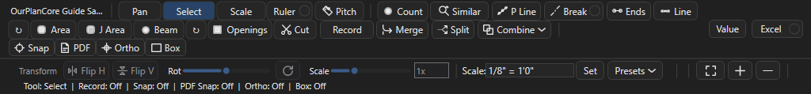
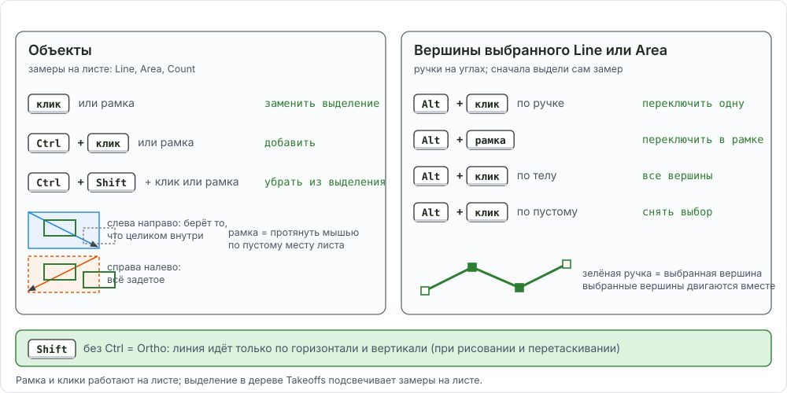
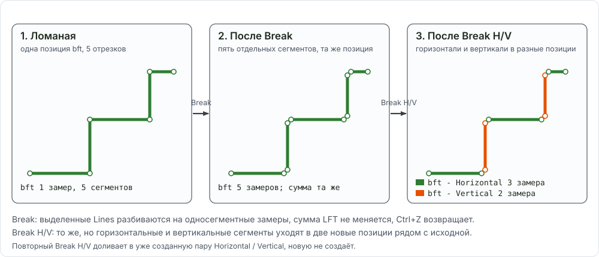

Правка замеров и привязки: как всё работает вместе¶
Здесь собрано всё, что делают с уже нарисованным замером: как выделить объект или его вершину, как подвинуть, разрезать, слить, вырезать, отразить и откатить. Таблицы отвечают, каким инструментом и где, рецепты внизу показывают операции в связке, пункты меню правой кнопки (копировать, переименовать, удалить на листе, в Takeoffs, Pages и Estimating) собраны в конце страницы, подробные шаги каждой операции лежат на странице Merge, Split, Break, Ends, Combine, Similar, привязки и трассировка на странице Snap и трассировки.

Cut, Merge, Split, Combine, переключатели Snap / PDF / Ortho / Box. Строка 2: Transform (Flip H, Flip V, Rot, Scale).Модель выделения¶
Инструмент Select (клавиша E). Правило одно: Ctrl работает с объектами, Alt с вершинами. Shift без Ctrl зарезервирован под Ortho (временно держит прямой угол).

| Что хочу | Жест | Что видно в статусе |
|---|---|---|
| выбрать один замер | клик по линии, контуру или метке | Moving Line... при перетаскивании |
| выбрать несколько рамкой | рамка слева направо берёт то, что целиком внутри; рамка справа налево берёт всё, что задето | Selected N measurement(s) and M enclosed cutout(s) или ... touched cutout(s) |
| добавить к выделению | Ctrl + клик или Ctrl + рамка | Selected N measurement(s) and M cutout(s) |
| убрать из выделения | Ctrl+Shift + клик или рамка | Removed N object(s) |
| все замеры листа | Ctrl+A | |
| вершины выбранного Line или Area | Alt + клик по ручке переключает одну, Alt + рамка переключает все ручки в рамке, Alt + клик по телу берёт все, Alt + клик по пустому снимает | N handle(s) selected |
| одна метка Count | клик по метке и перетаскивание; Alt не нужен | |
| вырез (дырка) в Area | клик внутри выреза; Ctrl добавляет к выделению | ... cutout(s) |
| снять выделение | клик по пустому месту или Esc |
Что ещё делает выделение на листе: Del удаляет выбранные объекты, выбранные вершины или выбранные вырезы (родительская Area остаётся); F2 или двойной клик по замеру переименовывает его позицию; Ctrl+C / Ctrl+V копируют на другой лист (копирование); H скрывает всю позицию выбранного замера на этом листе (видимость).
Лист и дерево. Выделение на листе и выделение в дереве Takeoffs живут отдельно. На листе выбираются сегменты, метки и вырезы одной страницы. В дереве выбираются целые позиции (Ctrl или Shift по строкам) или секции под позицией. Merge, Split, Break и Ends смотрят, где выделение: если в дереве выделены строки позиций, работают с целыми позициями на всех листах; иначе с тем, что выбрано на листе. Ctrl+Enter в дереве выделяет замеры секции на листе.
Правка вершин¶
Нужно: инструмент Select, замер Line или Area выбран (синие ручки видны).
Как подвинуть вершину¶
- Наведите курсор на синюю ручку выбранного замера.
- Перетащите её. Shift во время перетаскивания держит сдвиг по одной оси,
Snap(F3) цепляет вершину к концам, серединам и пересечениям соседних замеров. - Отпустите кнопку.
Результат: статус Editing Line vertex N, длина или площадь позиции пересчитана в Total.
Как подвинуть несколько вершин сразу¶
- Выберите замер (или несколько замеров рамкой).
- Alt + рамка вокруг нужных углов: ручки становятся выбранными.
- Перетащите любую выбранную ручку; все выбранные двигаются вместе. Shift держит ось.
Результат: статус Editing N selected vertices. Так сдвигают общий угол двух стен одним движением.
Как добавить и удалить вершину¶
- ПКМ по линии или контуру в нужном месте: пункт Insert Vertex Here вставляет вершину в ближайший сегмент. Статус
Inserted Line vertex N. - Удалить лишнюю: ПКМ рядом с ней, Remove Nearest Vertex; или Alt + клик по ручке и Del. У Line должно остаться не меньше двух точек, у Area трёх.
- Удалить метки Count: Alt + клик или рамка по меткам, Del. Если выбраны все метки замера, удаляется весь замер.
Результат: Deleted N selected vertex/vertices. Ctrl+Z возвращает.
Insert Vertex Here, перетаскивание вершины, затем Remove Nearest Vertex.Undo: где какой¶
Отмен в программе несколько, каждая слушает свой фокус.
| Где фокус | Клавиша | Что откатывает |
|---|---|---|
| лист (вьюпорт) | Ctrl+Z или Backspace | последнее действие с геометрией на этом листе: рисование (точку за точкой), перенос, вершины, Cut, Combine, Break, Transform, вставку, удаление, разметку и маску Hide, кропы на целевом листе, сдвиг наложения. Глубина 80 шагов; стек свой у каждого листа и очищается при смене листа |
| дерево Takeoffs | Ctrl+Z или ПКМ Undo Takeoff Merge / Split | удаление позиций и папок, Merge и Split целых позиций, в обратном порядке |
| дерево Pages | Ctrl+Z или ПКМ Undo Last Page Delete | только последнее удаление листов и папок; другой проект или закрытие программы отправляют его в корзину Windows |
| Main > Open / Import | Undo Last Page Sort, Undo Last Page Operation | сортировка листов, импорт проекта |
Не отменяются Undo: переименование, перенос позиции между папками, порядок и группы легенды, размещение кропа с листа-источника (удалять на целевом листе).
Карта операций¶
| Что хочу сделать | Инструмент | Клавиша | Где в меню | Страница |
|---|---|---|---|---|
| выбрать, подвинуть, удалить | Select |
E, Del | полоса инструментов | выше |
| подвинуть или удалить вершину | ручки, Alt | Del | ПКМ Insert Vertex Here, Remove Nearest Vertex | выше |
| слить позиции или сегменты | Merge |
Ctrl+M | ПКМ в Takeoffs Merge Selected Takeoffs... | Merge |
| разделить позицию по листам или секциям | Split |
Ctrl+Shift+M | ПКМ в Takeoffs Split Selected Takeoffs... | Split |
| отделить сегменты или метки в новую позицию | Split на листе |
Ctrl+Shift+M | Split на листе | |
| разбить ломаную на отрезки | Break |
Ctrl+Shift+B | ПКМ по линии Break Line Into Segments | Break |
| разнести горизонтальные и вертикальные | Break с точкой H/V |
Ctrl+Shift+V | Break H/V | |
| точки на концах линий | Ends |
нет | ПКМ по линии Count Points At Line Ends... | Ends |
| точки вдоль линии с шагом | P Line |
нет | ПКМ по линии Create Count Points Along Line... | P Line |
| вырез в площади, стереть кусок линии | Cut |
X, F9 бокс | полоса инструментов | Cut |
| сложить, вычесть, срезать наложение площадей | Combine |
нет | список Combine |
Combine |
| найти такие же символы | Similar |
нет | полоса инструментов | Similar |
| отразить, повернуть, масштабировать выбранное | Transform |
нет (Mirror назначается) |
строка 2 полосы | Transform |
| повторять отрезки или балки без диалога | Repeat Line, Repeat Beam |
нет | кнопки со стрелкой у Line и Beam |
Repeat |
| прямой угол, прямоугольник, привязка к своим точкам | Ortho, Box, Snap |
F8, F9, F3 | полоса инструментов | Snap |
| снять стены с векторного PDF | Trace Walls Inside Area, Layer Trace |
нет | ПКМ по Area, вкладка PDF Layers | трассировка |
Все команды есть и в палитре Ctrl+Shift+P (Break Lines Into Segments, Count Points At Line Ends, Combine Areas: Union...). Клавишу без назначения можно задать в редакторе клавиш. Merge, Split, Break, Ends, P Line, Combine, Similar и трассировка стен требуют модуль Advanced Takeoff Tools (включён по умолчанию, Settings > Modules).
Что с чем работает¶
| Операция | Line | Area | Count | J Area | Beam | Openings |
|---|---|---|---|---|---|---|
| перенос, Del, Ctrl+C / Ctrl+V | да | да | да | да | да | да |
| вершины (Alt, Insert, Remove) | да | да | метки | да | метка | метка |
Merge целых позиций |
да | да | да | да | как Count | как Count |
Merge сегментов на листе |
да | да | да | да | как Count | как Count |
Split позиции по секциям или листам |
да | да | да | да | как Count | как Count |
Split сегментов или меток на листе |
да | да | да, выбранные метки | да | метки | метки |
Break, Break H/V |
да | нет | нет | нет | нет | нет |
Ends, P Line |
да | нет | нет | нет | нет | нет |
Cut |
стирает кусок | вырез | нет | вырез | нет | нет |
Combine |
нет | да, 2 и больше | нет | да, как Area | нет | нет |
Transform |
да | да | да | да | да | да |
Similar |
нет | нет | да | нет | нет | нет |
Beam и Openings хранятся как Count с меткой, поэтому для правки они ведут себя как Count: метку можно подвинуть, слить, разделить; длина балки и размер проёма сидят в имени. Merge и Split не смешивают типы: Line только с Line, Area с Area, Count с Count, J Area с J Area.
Рецепты в связке¶
Каждый рецепт идёт от задачи эстиматора до видимого результата. Привязка PDF в рецептах не используется: она работает ненадёжно (почему); точность дают Ortho, Box, Snap к своим точкам, зум и правка вершин после.
Как обвести стену с прямыми углами и замкнуть контур¶
Зачем: ломаная по оси стены без углов, уехавших на долю градуса. Нужно: лист с масштабом, точка листа W стоит.
- Нажмите
Line(L), задайте имя позиции (ext 2x6 9.09), OK. - Включите
Ortho(F8) иSnap(F3). - Приблизьте зум к первому углу и кликните по оси стены.
- Ведите курсор к следующему углу:
Orthoдержит горизонталь или вертикаль. На диагональном участке отпуститеOrthoодним нажатием F8 и верните после. - Для замыкания подведите курсор к первой точке: подсветка
Snapпоказываетend; кликните. Для Area достаточно кликнуть рядом с первой точкой, контур замкнётся сам. - Нажмите C или двойной клик, чтобы закончить ломаную.
- Проверьте углы:
Select, перетащите ручки, где ось ушла.
Результат: позиция в walls/<этаж> floor walls, Total показывает длину. Лишняя точка во время рисования убирается Backspace.
ext 2x6 9.09, строка маршрута walls/1st floor walls, щелчки по оси наружной стены и C.Как разбить линию на отрезки и разнести по горизонтали и вертикали¶
Зачем: одна ломаная bracing или trim превращается в два счёта: горизонтальные и вертикальные футы. Нужно: Line нарисована.
- Выберите линии на листе или позицию в Takeoffs.
- Нажмите Ctrl+Shift+V (или закрасьте точку H/V на кнопке
Breakи нажмитеBreak). - Прочитайте статус:
Broke 1 line(s) into 7 segments: 4 to bft - Horizontal, 3 to bft - Vertical. - В Takeoffs рядом с исходной позицией появились
bft - Horizontalиbft - Vertical. Исходная позиция осталась пустой: удалите её или оставьте.
Результат: два отдельных итога. Обычный Break (Ctrl+Shift+B) режет на отрезки, оставляя их в той же позиции. Схема: что делает Break и Break H/V.
Horizontal и Vertical, затем Ends ставит метки на концах линий.Как слить сегменты из разных позиций в одну¶
Зачем: стена частично нарисована в ext 2x6 9.09, частично по ошибке в int 2x4 9.09.
Нужно: оба замера на одном листе.
Select, кликните по сегменту в чужой позиции, Ctrl + клик по остальным ошибочным.- Нажмите Ctrl+M.
- В диалоге Merge Into Takeoff выберите
ext 2x6 9.09, Merge.
Результат: статус Merged 2 segment(s) into ext 2x6 9.09, цвет сегментов сменился на цвет позиции. Чтобы слить две целые позиции, выделите их строки в дереве и нажмите Ctrl+M: Merge целых позиций.
Merge Into Takeoff переносят его в ext 2x6 9.09.Как разделить позицию по листам¶
Зачем: кровля rf 6 нарисована на трёх листах, в DFL нужна строка на каждый лист.
Нужно: позиция с секциями на нескольких листах.
- В Takeoffs выделите позицию.
- Нажмите Ctrl+Shift+M.
- В диалоге Split Selected Takeoffs выберите
Separate takeoffs by sheet; превью показывает1 takeoff(s) ... 3 takeoff(s), 2 new. - Нажмите Split.
- Переименуйте копии (F2):
rf 6 a105,rf 6 a106.
Результат: три позиции с одним именем и свойствами, отделённые получили новый цвет. Подробно про раскладку по листам: страница Split по листам.
Separate takeoffs by sheet: две позиции, по одной на лист.Как вырезать проём из площади и стереть кусок линии¶
Зачем: шахта или лестница не должна входить в 1st, а линия стены не должна идти через проём ворот.
Нужно: Area и Line нарисованы.
- Нажмите
Cut(X). Для прямоугольного выреза включитеBox(F9). - Кликните внутри площади, которую режете: она выделяется, вырез пойдёт только в неё.
- Обведите вырез (в режиме
Boxвторой угол), закончите C или двойным кликом. - Для линии:
Select, выберите линию, сноваCutи обведите кусок, который нужно стереть. Линия распадается на части по обе стороны.
Результат: статус Cut (box): ... с числом изменённых площадей и линий, Total уменьшился. Если первый клик был вне площади, Cut режет все линии листа, которых касается контур: сначала выделяйте цель.
Как объединить или вычесть площади¶
Зачем: два ската легли внахлёст, или из площади этажа надо вычесть балкон, нарисованный отдельно. Нужно: две и больше Area на одном листе.
Select, кликните первую площадь (она главная), Ctrl + клик по остальным.- Откройте список
Combine. - Выберите:
Unionсложить в одну,Subtractиз первой вычесть остальные,Remove Overlapсрезать перекрытие (первая остаётся целой),Intersectоставить общее,Divideразбить на части. - Сравните
Totalдо и после.
Результат: статус Combine remove overlap: trimmed 1 area(s) against the first-selected. Порядок выбора важен: первой кликайте ту площадь, которая должна остаться целой.
1st, Ctrl и щелчок по балкону, Combine > Subtract: площадь этажа уменьшилась на нахлёст.Как поставить точки на концах и вдоль линии¶
Зачем: посты по концам балок, стойки или hangers с шагом вдоль линии. Нужно: Line нарисованы.
- Выберите линии (на листе или позицию в дереве).
- Нажмите
Ends. В диалоге Count Points At Line Ends оставьте галкуMerge points where segments meet, задайте имя, Create. - Снова выберите линии и нажмите
P Line. В диалоге Create Count Points Along Line(s) задайтеCount takeoff name,Spacing, inches(например96), галкуInclude line end point, Create.
Результат: два новых Count в той же папке, статус End points created: N Count mark(s). Лишние метки на стыках снимаются Alt + клик и Del.
P Line, имя posts 2x4, шаг 48: метки встают вдоль линий.Как найти такие же символы на других листах¶
Зачем: один holdown или post посчитать на всех этажах за один проход. Нужно: активный Count или готовность завести новый, лист открыт.
- Нажмите
Similar, обведите рамкой один символ. - В диалоге выберите порог
Default(илиStrict, если ловит лишнее), галкуSearch all sheets in this job. Поиск по всем листам идёт десятки секунд даже на маленьком проекте (на демо около 35 с), кнопкаAddждёт его конца: не щёлкайте повторно. - Посмотрите метки: синие добавятся, оранжевые слабые, серые уже посчитаны. При сомнении нажмите
Strong only. - Нажмите кнопку
Add N to <имя>.
Результат: метки добавлены в Count на текущем и других листах, статус перечисляет добавленное. Поиск ищет похожую картинку, не назначение: проверьте оранжевые.
Similar, рамка вокруг окна, галки Match rotated copies и Search all sheets, Add. Ожидание поиска по листам вырезано.Как повторить рисование серии¶
Зачем: двадцать коротких ledger или десять балок без диалога на каждую. Нужно: лист с масштабом.
- Нажмите стрелку
Repeat Lineрядом сLine(илиRepeat Beamрядом сBeam). - Для Line задайте имя один раз. Дальше каждые два клика дают отдельный отрезок в этой позиции.
- Для Beam каждая пара кликов меряет балку, спрашивает имя и ставит метку, потом ждёт следующую.
- Нажмите Esc, чтобы закончить. Статус
Repeat drawing stopped.
Результат: серия отрезков или балок без переключения инструмента.
Repeat Line, имя blk 2x10, отрезки парами щелчков без переключения инструмента, Esc заканчивает.Как отразить и повернуть замеры¶
Зачем: зеркальный юнит или повёрнутый корпус: скопированные замеры надо развернуть на месте. Нужно: замеры выделены на листе.
Select, выделите замеры рамкой.- В строке 2 полосы нажмите
Flip HилиFlip V: зеркало вокруг центра выделения. - Поворот: тяните оранжевую ручку поворота на рамке выделения (Shift даёт шаг 15°) или двигайте ползунок
Rot; кнопка со стрелкой возвращает ползунок в ноль для следующего поворота. - Размер: угловые ручки масштабируют от центра, боковые тянут одну сторону (Shift сохраняет пропорции); или ползунок
Scaleи поле1x. - Перетащите выделение на место.
Результат: статус Mirrored selection horizontal, Rotated selection 90 deg. Один Ctrl+Z отменяет всё движение ползунка. Клавиши для зеркала назначаются в редакторе клавиш (Mirror selected objects horizontally / vertically).
Flip H, Flip V, ползунок Rot; три Ctrl+Z возвращают всё назад.Как исправить замер, который ушёл не в ту позицию¶
Зачем: стена нарисована при активном Record чужой позиции или на листе с неверной точкой.
Нужно: знать, куда должен лечь замер.
- Найдите замер на листе: в дереве кликните чужую позицию, Ctrl+Enter по секции подсветит её замеры.
- Если нужная позиция уже есть:
Select, выберите замер, Ctrl+M, в Merge Into Takeoff выберите правильную позицию. - Если нужной позиции нет: Ctrl+Shift+M, в Split Selected Measurements введите новое имя. Новая позиция ляжет рядом с исходной.
- Если ошибся весь лист (не та точка W/F/S): поправьте точку под
Scale, затем перетащите позицию в дереве в нужную папку или слейте с правильной через Ctrl+M по строкам дерева.
Результат: Total исходной позиции уменьшился, статус Merged N segment(s) into ... или Split N segment(s) into new takeoff .... Куда ляжет новый замер: маршрутизация.
Как замкнуть угол двух стен, нарисованных отдельно¶
Зачем: две линии встык дают щель или перехлёст в углу, в PDF это видно. Нужно: обе линии на одном листе.
Select, кликните первую линию, Ctrl + клик по второй.- Alt + рамка вокруг угла: выбираются обе концевые ручки.
- Перетащите одну ручку с включённым
Snap(F3): обе точки сдвигаются вместе и прилипают к концу или пересечению. - Если линии в одной позиции и нужен один сегмент вместо двух, оставьте как есть:
Mergeгеометрию не склеивает, сумма длин уже верна.
Результат: статус Editing 2 selected vertices, угол сходится в одну точку.
Схема Break и Break H/V¶

bft. В центре после Break: пять отдельных сегментов в той же позиции, сумма та же. Справа после Break H/V: горизонтальные ушли в bft - Horizontal, вертикальные в bft - Vertical.Меню правой кнопки: копировать, переименовать, удалить¶
Те же действия, что клавиши и кнопки выше, есть в меню правой кнопки мыши. Название пункта меняется под выделение: при нескольких строках вместо Copy Item будет Copy Selected, у позиции Count вместо Section будет Count. Ниже пункты собраны по месту, где открыто меню.
ПКМ по замеру на листе
| Пункт | Что делает | Когда нужно |
|---|---|---|
Copy Measurement |
кладёт в буфер замер под курсором, как Ctrl+C; при выделении пункт называется Copy Selected Measurements, с вырезами Copy N Cutout(s) |
перенести замер на другой лист |
Paste Measurements to This Sheet |
вставляет буфер на этот лист (с числом: Paste 3 Measurement(s) to This Sheet): левый верхний угол скопированного набора встаёт в точку клика, дальше тот же диалог Paste Measurements, что у Ctrl+V |
одинаковый этаж или корпус: копирование |
Merge Segment..., Split Segment... |
перенести замер в другую позицию или отделить в новую | Merge на листе, Split на листе |
Takeoff Properties..., Section Properties... |
свойства всей позиции; имя и заметка одного замера (секции) | поменять шаг, цвет, высоту; пометить один участок |
Rename Section |
меняет имя секции, то есть строки этого замера под позицией в Takeoffs; имя позиции не трогает. У Count пункт называется Rename Count, у замера без позиции Rename Measurement и неактивен |
подписать участок (north wing), чтобы найти его в дереве |
Insert Vertex Here, Remove Nearest Vertex |
вставить или убрать вершину | вершины |
Delete Section |
удаляет только этот замер после вопроса Delete this section from <позиция>?; позиция и остальные её замеры остаются. У Count Delete Count, у замера без позиции Delete Measurement (неактивен) |
лишний участок; всю позицию удаляют в дереве |
| пункты Line и J Area | Break Line Into Segments, Count Points At Line Ends..., Create Count Points Along Line...; Use Area As Joists..., Delete Nearest Extra Joist и другие |
Break и Ends, меню J Area |
В отдельном окне листа (Detach) меню короче: Copy Measurement, Paste Measurements to This Sheet, Takeoff Properties..., Section Properties..., Rename Section, пункты J Area и Hide on This Sheet / Show on This Sheet. Пунктов Delete Section, Merge, Split и вершин там нет: это делается в главном окне.
ПКМ в дереве Takeoffs
| Где | Пункт | Что делает |
|---|---|---|
| позиция | Duplicate Item (Ctrl+D) |
копия позиции с тем же именем, свойствами и всеми замерами в той же папке, в конце списка. Замеры копии лежат на тех же листах поверх исходных: до Excel копию переименуйте и перенесите или удалите лишнее |
| позиция | Delete item + measurements |
удаляет позицию и все её замеры на всех листах после вопроса Delete "<имя>" and all contained measurements?; Ctrl+Z в панели Takeoffs возвращает |
позиция, подменю Clipboard |
Copy Item, Cut Item, Paste Into Parent Folder |
копия или перенос позиции; вставить в другую папку: ПКМ по папке, Paste Into Folder |
| папка | Delete folder + children |
удаляет папку со всеми позициями и замерами; Ctrl+Z в панели Takeoffs возвращает |
папка, подменю Clipboard |
Copy Folder, Cut Folder, Paste Into Folder, Duplicate Folder |
то же для папки целиком: перенести этаж в другой корпус, размножить дерево этажа |
| корень Takeoffs (пустое место под деревом) | Paste Into Root |
вставляет скопированное или вырезанное на верхний уровень дерева |
| секция под позицией | Rename Section, Delete Section (для нескольких: Delete 3 Sections) |
как на листе, но для выделенных строк секций |
При нескольких выделенных строках пункты называются Copy Selected, Cut Selected, Duplicate Selected, Delete selected takeoffs. Вырезать и вставить: замеры, цвет и порядок легенды сохраняются. Копировать и вставить или Duplicate: копируются и замеры.
ПКМ в дереве Pages и Batch Rotate
| Где | Пункт | Что делает |
|---|---|---|
| лист или папка, первая строка | Undo Last Page Delete |
возвращает последнее удаление листов или папок, как Ctrl+Z в Pages; когда есть что вернуть, пункт называется Undo Delete: <имя>. Хранится одно удаление: следующее удаление, переход в другой проект или закрытие программы отправляют прежнее в корзину Windows |
| лист | Delete Page (несколько: Delete Selected) |
удаляет лист после вопроса Delete page '<имя>'? |
| папка | Delete Folder |
удаляет папку со всем содержимым после вопроса Delete folder '<имя>' and everything inside it? |
лист, подменю Clipboard |
Copy Page, Cut Page, Paste Into Parent Folder |
вырезать и вставить переносит лист, замеры остаются привязаны к нему. Копировать и вставить даёт копию листа (PDF, масштаб, разметка) без замеров: замеры живут в Takeoffs |
папка, подменю Clipboard |
Copy Folder, Cut Folder, Paste Into Folder |
то же для папки листов |
лист или папка, подменю PDF Metadata |
Auto Rename from PDF..., Auto Rename + Scale from PDF... |
то же, что кнопки Name и Name+Scale панели Pages, для листов под курсором и выделенных: превью имён (и масштабов), применение после OK (имена) |
лента Page, кнопка Batch Rotate |
Rotate Selected Left, Rotate Selected Right, Rotate Selected 180 |
поворачивает PDF всех листов, выделенных в Pages (без выделения текущий лист); замеры, вырезы, разметка и точка origin поворачиваются вместе с листом |
ПКМ по строке Estimating
Go to Page (при нескольких строках Go to First Page) открывает лист замера, Select on Canvas выделяет замер на листе, Section Properties... открывает имя и заметку секции, Rename Section и Delete Section работают как на листе. При нескольких выделенных строках эти два пункта называются Rename Measurement и Delete Measurement и неактивны: переименование и удаление идут по одной строке.
Ловушки¶
Mergeне склеивает геометрию: две линии встык остаются двумя сегментами с общей суммой.Cutбез выделенной цели режет все линии листа, которых касается контур. Первый клик делайте внутри площади или выделяйте цель заранее.Combineсмотрит на порядок выбора: первая выбранная площадь главная дляSubtractиRemove Overlap.- Ctrl+Z отменяет там, где фокус: лист, дерево Takeoffs или дерево Pages. После смены листа стек отмены листа пуст.
Break H/Vпри повторном запуске доливает в уже созданную пару- Horizontal/- Vertical, а не создаёт новую.Snapна плотном чертеже цепляется к соседнему замеру: выключите F3 или приблизьте зум.- Клик по метке Count двигает её сразу, без Alt: случайный сдвиг возвращает Ctrl+Z.
Duplicate Itemи копирование позиции в дереве копируют и замеры: на листе копия лежит поверх исходника, сумма в Excel удвоится.Copy Pageнаоборот копирует лист без замеров.Rename Sectionпереименовывает строку замера, а не позицию: имя для Excel даёт позиция (F2 по строке позиции в дереве).